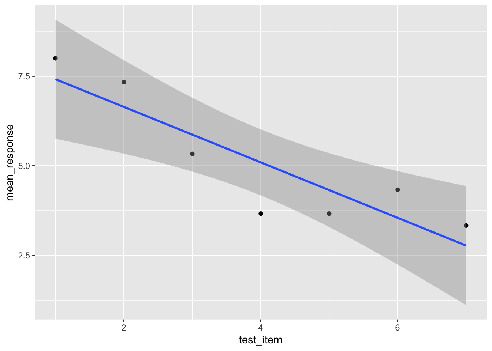

Yet another exercise in fixing broken code, but this time using the frames data!
library(tidyverse)
library(here)
YOUR-CODE-HERE## Error in eval(expr, envir, enclos): object 'YOUR' not foundframes <- here("analysis", "data", "frames_ex2.csv") %>% read_csv()Print and skim the data. Notice that there are a lot of rows, because every row is a single judgment!
YOUR-CODE-HERE## Error in eval(expr, envir, enclos): object 'YOUR' not foundUse filter to extract the data from person with id of 12.
one_person <- frames %>%
YOUR-CODE-HERE## Error in YOUR(.): could not find function "YOUR"Inspect their raw data:
YOUR-CODE-HERE## Error in eval(expr, envir, enclos): object 'YOUR' not foundNext let’s look at their average “response” across each of the 7 test items (i.e., group by test item and compute the mean response for each item.
generalisation <- one_person %>%
group_by(YOUR-CODE-HERE) %>%
summarise(mean_response = YOUR-CODE-HERE)## Error in mutate_impl(.data, dots): Evaluation error: object 'YOUR' not found.Finally, as a reward, a picture! This code shold start working once the chunks above work
generalisation %>%
ggplot(aes(x = test_item, y = mean_response)) +
geom_point() +
geom_smooth(method = lm)